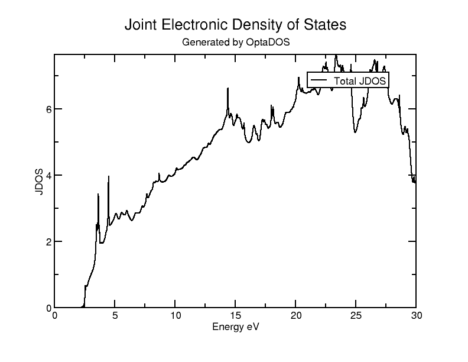
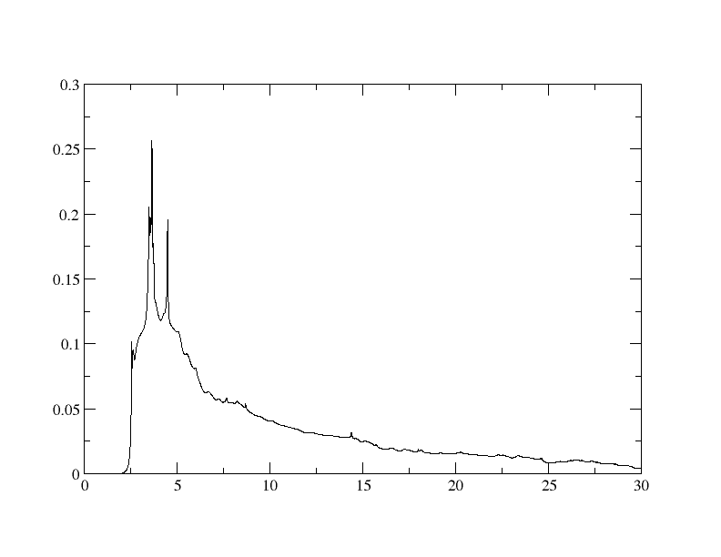
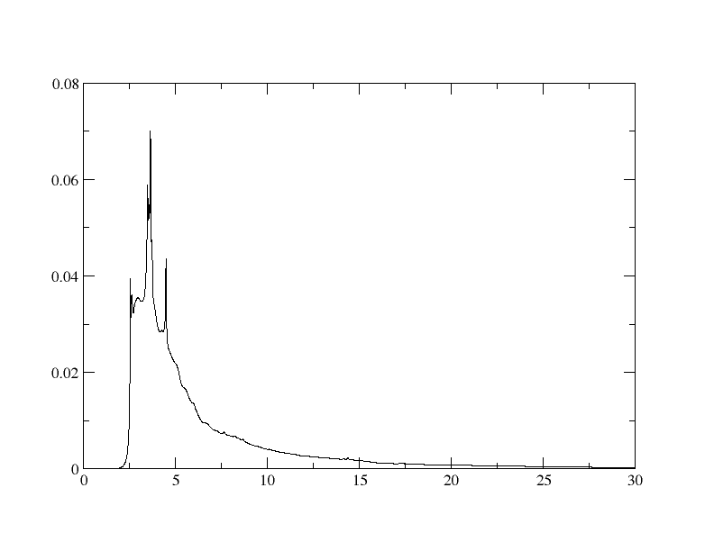
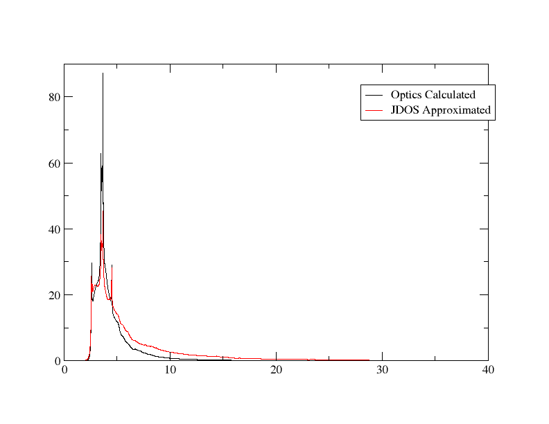
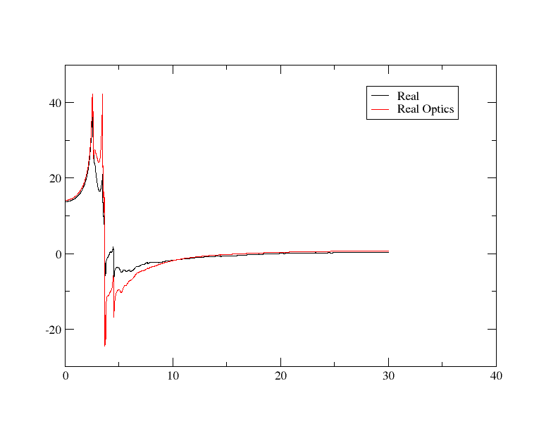
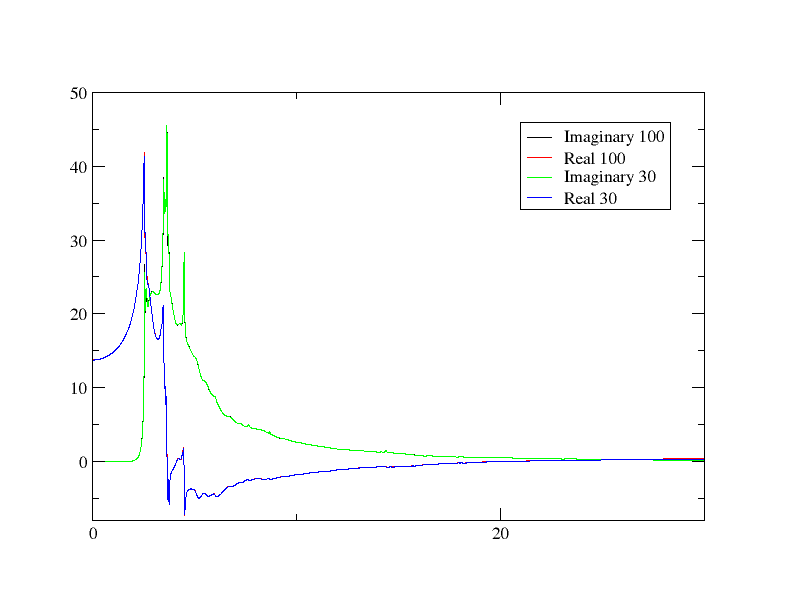
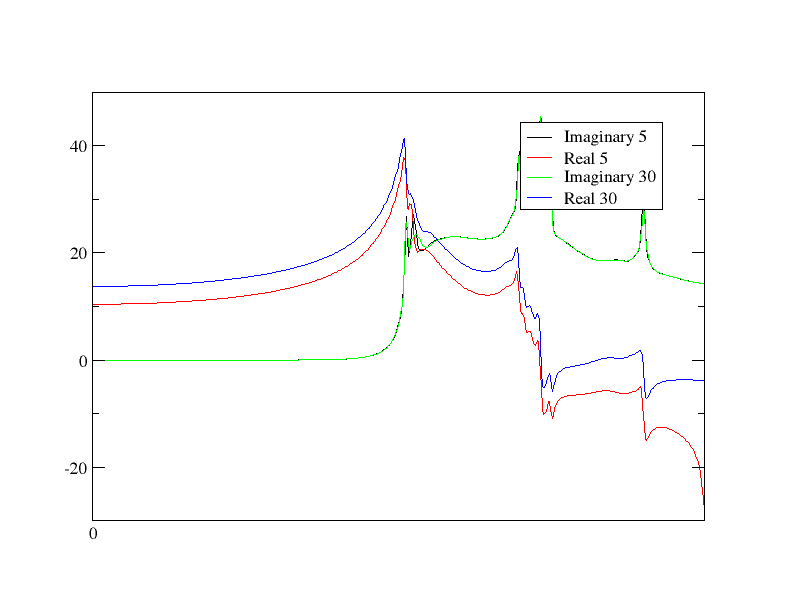
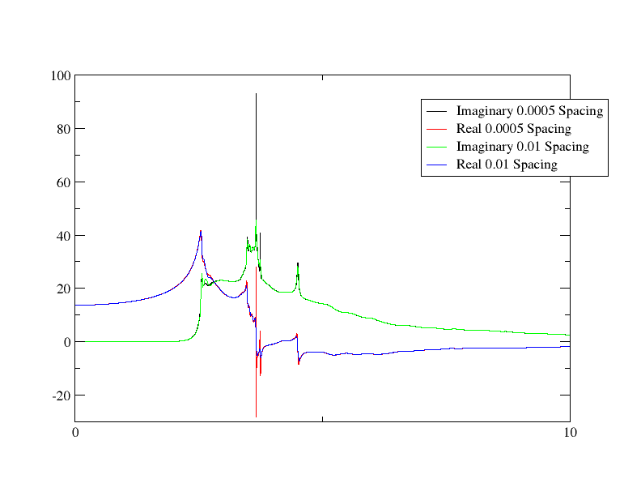
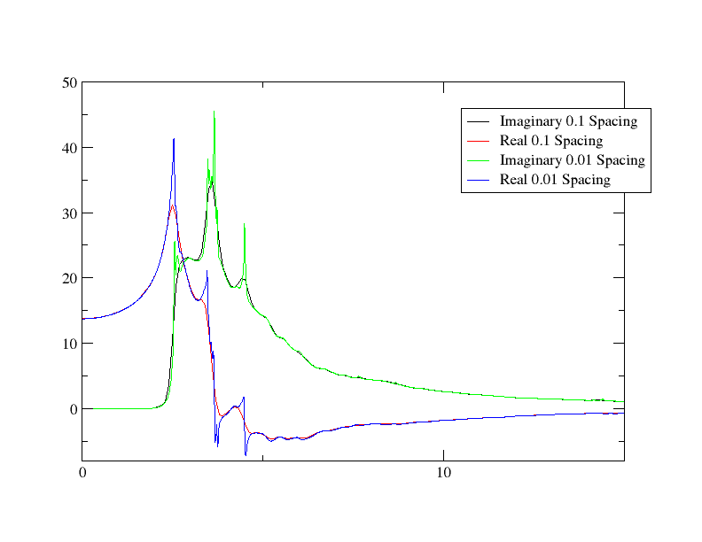

JDOS
The JDOS (Joint Density of States) is effectively the density of states for an energy range which is equal to the difference between conduction and valence bands - this leads to being able to calculate the probability of an excitation occurring for a given photon energy. One can intuitively understand how this leads to the calculation of optical properties: photons that have energies that correspond to gaps between conduction and valence bands will interact with the material and give rise to its optical properties.
In this tutorial, we will calculate the JDOS for silicon, and then relate that to the imaginary and real part of the dielectric function.
JDOS Calculation
Let's start by actually getting the JDOS results. Run Castep on the cell file
Si.cell
%BLOCK LATTICE_CART
2.73 2.73 0.00
2.73 0.00 2.73
0.00 2.73 2.73
%ENDBLOCK LATTICE_CART
%BLOCK POSITIONS_FRAC
Si 0.0 0.0 0.0
Si 0.25 0.25 0.25
%ENDBLOCK POSITIONS_FRAC
SYMMETRY_GENERATE
KPOINTS_MP_GRID 10 10 10
SPECTRAL_KPOINTS_MP_GRID 10 10 10
and param file
Si.param
Afterwards, run Optados with the Optados input file
Si.odi
TASK : jdos
JDOS_MAX_ENERGY : 30
JDOS_SPACING : 0.01
EFERMI : optados
DOS_SPACING : 0.1
BROADENING : adaptive # Default
ADAPTIVE_SMEARING : 0.4 # Default
FIXED_SMEARING : 0.3 # Default
SET_EFERMI_ZERO : true # Default
NUMERICAL_INTDOS : false # Default
FINITE_BIN_CORRECTION : true # Default
The line TASK : jdos is what tells it to calculate the JDOS in which we are interested. This will generate the file Si.jadaptive.dat (as well as the accompanying agr file). The dat file data table should start like this
The 1st column is the energy, and the 2nd is the JDOS. The agr file allows us to make a nice plot with xmgrace (though of course you could plot the results with your software of choice) - let's run
xmgrace Si.jadaptive.agr
The result should look like this:

Imaginary Dielectric
Now that we have the results, let's examine how they are used to get the dielectric function. You may immediately notice that the shape of the graph above is completely different from either component of the dielectric function. We will need to process the results for them to be meaningful.
We will start processing the data by using the Python script
energies = []
imaginaries = []
input_file = 'Si.jadaptive.dat'
output_file = 'imaginary.dat'
new_lines = []
with open(input_file, 'r') as infile:
for line in infile:
if "#" in line:
continue
parts = line.split()
if len(parts) == 2:
energy = float(parts[0])
jdos = float(parts[1])
energies.append(energy)
if jdos == 0.0 or energy == 0:
eps2 = 0
else:
eps2 = (jdos/energy**2)
imaginaries.append(eps2)
new_line = f"{energy} {jdos} {test}\n"
new_lines.append(new_line)
with open(output_file, 'w') as outfile:
outfile.writelines(new_lines)
imaginary.dat that contains the energy, JDOS and our first approximation of the imaginary dielectric function in the 3rd column. This is approximated by the relationship
\epsilon_2 \propto \frac{\text{JDOS}}{\omega^2}
which was implemented in the line
We can plot this dat file by using xmgrace on the batch script
plot.bat
to get just the imaginary output. The graph should look like this:

We're starting to see a bit of a resemblance to the imaginary component of the imaginary dielectric function, but it still clearly has room for improvement - the calculation is performed by multiplying what we found by a matrix element, which in this case we are assuming to be constant with energy - which is not the case in reality. We can improve the approximation by using the relationship
\epsilon_2 \propto \frac{1}{m^*}
This is a hard thing to implement properly; the effective mass is very difficult to get, depends on position in k-space etc. However, we can simply this with the approximation that, near the band edges, the effective mass is directly proportional to the energy.
Note
This does have some mathematical merit - if you wish to see where this comes from, have a look at this paper
Let's change the line where eps2 is calculated in the Python script to
Re-running the same procedure now yields the graph:

At a glance, you can see that it levels off much more quickly - just as it happens in the more-properly calculated dielectric function.
To confirm that the results are reasonable, let's plot this together with the results from an actual Optados optics calculation. You can see how to obtain this data at the start of the optics tutorial, or you can download the relevant dat file here. Because we have gotten the results using simple proportionality relations, we'll have to scale the results to make them match experiment - adjust the Python script by changing the eps2 calculation line to
650 was found by trial and error to give a reasonable match - again this is simply estimating the constant of proportionality that has been ignored throughout this approximation. You can use the batch file
READ BLOCK "Si_epsilon.dat"
BLOCK XY "1:3"
S0 LEGEND "Optics Calculated"
READ BLOCK "imaginary.dat"
BLOCK XY "1:3"
S1 LEGEND "JDOS Approximated"
to plot it with xmgrace. You can see that they are fairly similar in the graph produced:

Real Dielectric
We have seen how the JDOS is used to calculate the imaginary dielectric function, and now we will look at how the real component is calculated. The real component is actually calculated only using the imaginary component, using the Kramers-Kroniger relations - and we will demonstrate that.
The equation we will use is
\epsilon_1(\omega) = 1 + \frac{2}{\pi} \mathcal{P} \int_{0}^{\infty} \frac{\omega' \epsilon_2(\omega')}{\omega'^2 - \omega^2} \, d\omega'
We'll ignore the constants of proportionality again and just adjust the results. Adding this block of code to the previous Python script
import numpy as np
energies_arr = np.array(energies)
eps2_arr = np.array(imaginaries)
def kramers():
eps1_arr = []
for i, e in enumerate(energies_arr):
real = 0
sub = (energies_arr**2)-(e**2)
sub[i] = np.inf
integrand = (energies_arr * eps2_arr)/sub
real = 1 + 0.6(np.trapz(integrand, energies_arr))
eps1_arr.append(real)
return eps1_arr
eps1_arr = kramers()
data = np.column_stack((energies_arr, eps2_arr, eps1_arr))
np.savetxt("both.dat", data)
The implementation is fairly straightforward: for every energy: the integral as in the equation is simply performed for every energy. While adding 1 to the integral is specified in the equation, again the constant of proportionality was found by trial and error until it was a decent fit (and the imaginary part was already scaled the same way).
The data is then saved in both.dat with the 1st column being energy, the 2nd imaginary dielectric and the 3rd real dielectric. Let's now compare the imaginary components using xmgrace. Adjust the batch file appropriately, and you should get a graph that looks like:

Now we have demonstrated how both parts of the dielectric are related to the JDOS.
Sampling Parameters
We will now have a look at the effect of increasing and decreasing the JDOS_MAX_ENERGY and JDOS_SPACING parameters. JDOS_MAX_ENERGY determines the highest energy band that is examined, while JDOS_SPACING determines how frequently the results are sampled. We will perform exactly the same procedure as above (including calculating the real and imaginary dielectric - this is the crucial part). It is recommended that you do these calculations in new directories to make it easier to compare results.
Maximum Energy
Let's first look at increasing and decreasing the maximum energy. We'll start off by increasing it to 100eV. Run the full procedure as above (ending up with both.dat in the new directory), except with the odi file having the line
JDOS_MAX_ENERGY : 100
instead of 30. In this case, it is most useful to compare with the result we got from the 30eV maximum energy - plot them both on the same graph. This is what was obtained using an appropriate batch file:

We see that the overlap is virtually perfect: sampling beyond 30eV does not improve any results. This indicates that all contributing bands have an energy of 30eV or lower.
Let's now try lowering the maximum energy. If we try 20eV and plotting it together with the 30eV result the same way we see this:

Now the overlap is no longer perfect: especially towards the end, the real part is becoming increasingly different. Feel free to try different lower energies - you should notice that the lower the maximum energy, the more different the real part becomes, while the imaginary component is unchanging. The example below is for very low 5eV:

This shows us that the imaginary component is calculated independently for each energy, but, because the real component is calculated by integrating over all energies, the imaginary component becomes increasingly incorrect as the integral becomes performed not over the full relevant range.
Spacing
Now let's try decreasing and increasing the rate of sampling by changing the JDOS_SPACING parameter. We will compare it to the standard 0.01eV results we calculated before. First, let's try lowering it - be warned that making it too low will make the python script used to get the real component run extremely slowly; the integral becomes too demanding with too many points.
JDOS_SPACING : 0.0005
was used in for the result below:

We see here that the results are virtually the same for low and high frequencies, and even the middle part is mostly the same, except for a very narrow range of energies - precisely where the most extreme jumps are occurring. Having a larger sampling failed to capture the largest increases, and increasing the sampling rate meant that they are now seen. Since the other parts of the dielectric function doesn't have such extreme changes, nothing was missed by a slightly higher sampling spacing.
Let's now have a look at what happens when we increase the spacing. The result is about what you'd expect: the graph simply loses some of the detail, as seen below.

The graph is smoothened out, and, if you were to increase the spacing further, increasing amounts of detail would be lost. Though both results are affected, the real component is more affected: due to it being calculated by integrating the imaginary part, it is much more sensitive to any kind of change in sampling.